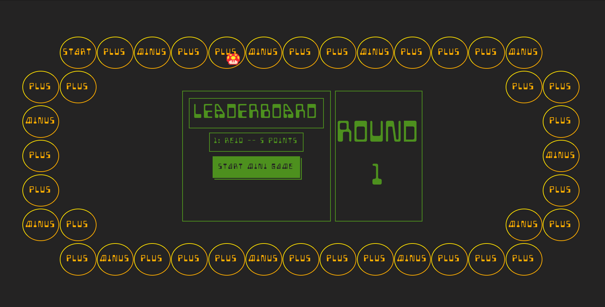

Bootleg Party
Bootleg Party is a web based version of the popular Nintendo game, Mario Party. (JS/React/Firebase/Phaser)
Project LinkGithub
Bootleg Party is a web based version of the popular Nintendo game, Mario Party. (JS/React/Firebase/Phaser)
Project Link